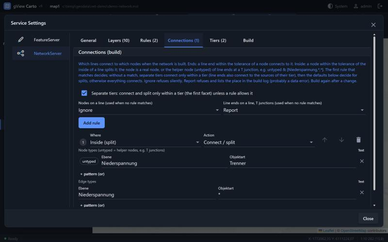

Blatt 8 · Umsetzung in gView
Der Host ist gView
gView ist der Host aus Blatt 1: Carto stellt das Netz ein und baut es, der Server sucht darauf. Die Einstellungen stehen in einer Netzwerk-Konfiguration, die mit der Karte gespeichert wird und sich als JSON austauschen lässt. Die Schritt-für-Schritt-Anleitung steht in der gView-Dokumentation unter Carto, Netzwerke erstellen.
Der Weg vom GIS zum Dienst
- LayerPunkt- und Linien-Layer der Karte nehmen am Netz teil. Je Layer eine Typ-Vorlage pro Facette, z. B. die Gruppe als Ebene und der Layername als Objektart.
- EinstellenIn Carto unter Service Settings, NetworkServer: Toleranz, Facetten, Ebenen, Verbindungen, Prüfregeln.
- BauenIn Carto, in der Server-Verwaltung oder nachts mit
gView.Cmd. Das Netz liegt als Verzeichnis neben der Karte bzw. beim Dienst: Shards, Indizes undnetwork.json. - SuchenMit dem Werkzeug Network Search in Carto oder über die REST-Schnittstelle des NetworkServer.
Wo was eingestellt wird
| Thema | Carto | network.json | Blatt |
|---|---|---|---|
| Teilnahme, Typ, Where, Länge, Richtung, Schaltzustand | Layer Settings, Seite Network | nodes, edges | 2, 3 |
| Toleranz, Koordinatensystem, zusammenfallende Punkte | Tab General | tolerance, srs, nodeConflicts | 2 |
| Facetten, Gewichte | Tab General | facets, weights | 3, 4 |
| Shards | Layer Settings des Polygon-Layers | shards | 2 |
| Versorgungsquellen, Kunden | Tab General, Supply | supplySources, customers | 5 |
| Ebenen | Tab Tiers | tiers | 7 |
| Verbinden und Teilen | Tab Connections | separateTiers, nodesOnLine, lineEndsOnLine, connectRules | 7 |
| Prüfregeln | Tab Rules | rules | 6 |
Quellen, Kunden, Regeln und Ebenen hängen nicht von den Daten ab. Sie lassen sich ohne Neubau in ein gebautes Netz schreiben (Refresh metadata). Alles, was das Bauen betrifft, braucht einen Neubau.

Suchen
Carto und der Server verwenden denselben Suchdienst. Operationen: trace, reach, path, supply, outage, info, nearest und validate. Jede nimmt eine oder mehrere Ebenen, ein Gebiet, gesperrte Knoten und abgeschaltete Kanten als Abweichung.

IDs und Bezug zum GIS
- Ein echter Knoten oder eine Kante wird über ihr Objekt angesprochen:
Layer#OID, z. B.Kasten#17. Eine geteilte Linie ergibt TeileLeitung#4576/0,/1, … - Hilfsknoten haben eine ID aus Ort und Typ und werden über ihren Ort angesprochen (
@x,y). - Zusammengeführte Punkte (Aliase) finden ihren Knoten weiter über ihr eigenes Objekt.